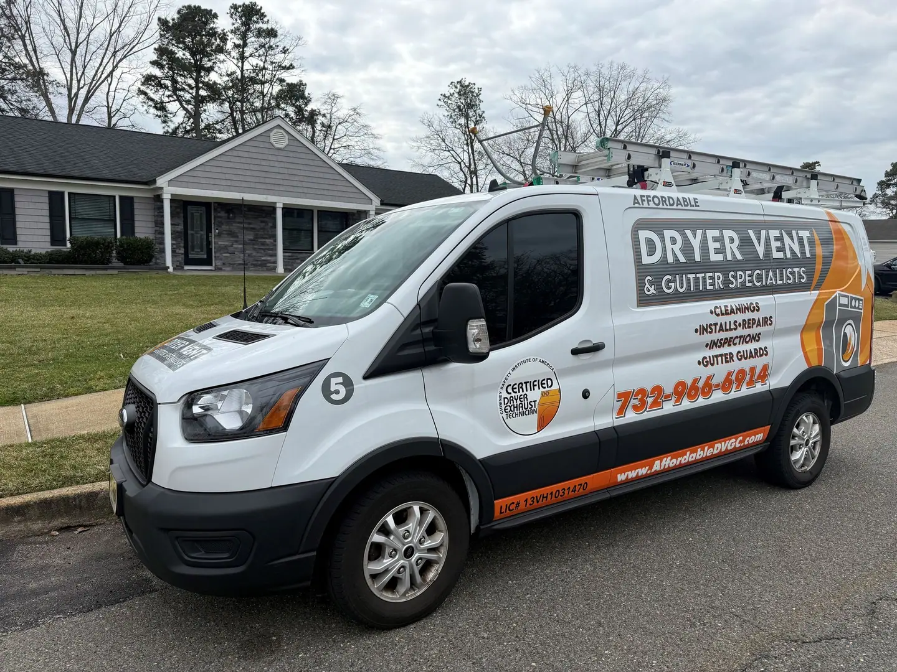

Dryer Vent & Gutter Service Areas
Locally owned. Serving Ocean County and Monmouth County, New Jersey.
We know these neighborhoods.
We live here, work here, and treat our customers like family. From Toms River and the shore towns to Freehold and Manahawkin, we’re proud to help our New Jersey neighbors protect their homes with honest dryer vent and gutter service. Don’t see your neighborhood name? Call or text us and we’ll help you.
Written in the family-owned company’s voice, adapted from its published mission statement.

Local Favorites. Countywide Coverage.
These are just a few of the communities our team serves. Pick your town below to prefill the quote request.
Toms River
Toms River Township · Ocean County
Check availability ↗Featured communityFreehold
Freehold Borough & Freehold Township · Monmouth County
Check availability ↗Featured communityBarnegat
Barnegat Township · Ocean County
Check availability ↗Featured communityStafford / Manahawkin
Stafford Township · Ocean County · Manahawkin is a community, not a separate municipality
Check availability ↗Ocean County, NJ
33 municipalities · Alphabetically organized · Select your municipality to start a quote.
- Barnegat Light Borough
- Barnegat Township
- Bay Head Borough
- Beach Haven Borough
- Beachwood Borough
- Berkeley Township
- Brick Township
- Eagleswood Township
- Harvey Cedars Borough
- Island Heights Borough
- Jackson Township
- Lacey Township
- Lakehurst Borough
- Lakewood Township
- Lavallette Borough
- Little Egg Harbor Township
- Long Beach Township
- Manchester Township
- Mantoloking Borough
- Ocean Gate Borough
- Ocean Township
- Pine Beach Borough
- Plumsted Township
- Point Pleasant Beach Borough
- Point Pleasant Borough
- Seaside Heights Borough
- Seaside Park Borough
- Ship Bottom Borough
- South Toms River Borough
- Stafford Township (Manahawkin)
- Surf City Borough
- Toms River Township
- Tuckerton Borough
Monmouth County, NJ
53 municipalities · Alphabetically organized · Select your municipality to start a quote.
- Aberdeen Township
- Allenhurst Borough
- Allentown Borough
- Asbury Park City
- Atlantic Highlands Borough
- Avon-by-the-Sea Borough
- Belmar Borough
- Bradley Beach Borough
- Brielle Borough
- Colts Neck Township
- Deal Borough
- Eatontown Borough
- Englishtown Borough
- Fair Haven Borough
- Farmingdale Borough
- Freehold Borough
- Freehold Township
- Hazlet Township
- Highlands Borough
- Holmdel Township
- Howell Township
- Interlaken Borough
- Keansburg Borough
- Keyport Borough
- Lake Como Borough
- Little Silver Borough
- Loch Arbour Village
- Long Branch City
- Manalapan Township
- Manasquan Borough
- Marlboro Township
- Matawan Borough
- Middletown Township
- Millstone Township
- Monmouth Beach Borough
- Neptune City Borough
- Neptune Township
- Ocean Township
- Oceanport Borough
- Red Bank Borough
- Roosevelt Borough
- Rumson Borough
- Sea Bright Borough
- Sea Girt Borough
- Shrewsbury Borough
- Shrewsbury Township
- Spring Lake Borough
- Spring Lake Heights Borough
- Tinton Falls Borough
- Union Beach Borough
- Upper Freehold Township
- Wall Township
- West Long Branch Borough
Ocean & Monmouth County
Interactive coverage map placeholder · Municipality lists above are the authoritative navigation for this preview.
Map illustration / integration pendingReal work. Real peace of mind.
From clogged dryer vents to gutter guards, we treat every home like family. Tell us what you need and we’ll help you decide on the next step.